Решение № 2. Изменять размеры заголовка резиново, а не отзывчиво.
Отзывчивый шрифт (Responsive)
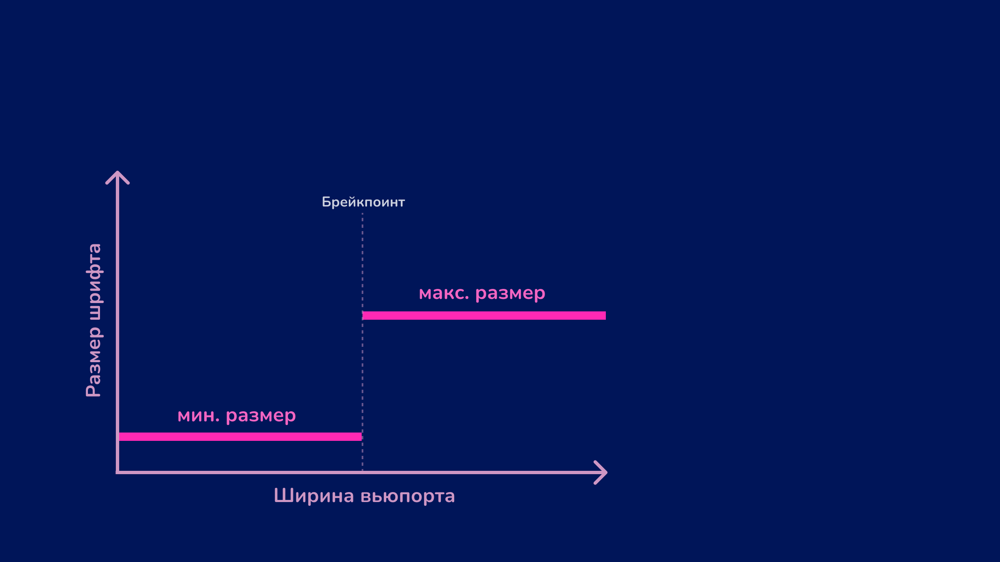
Резиновый шрифт (Fluid)
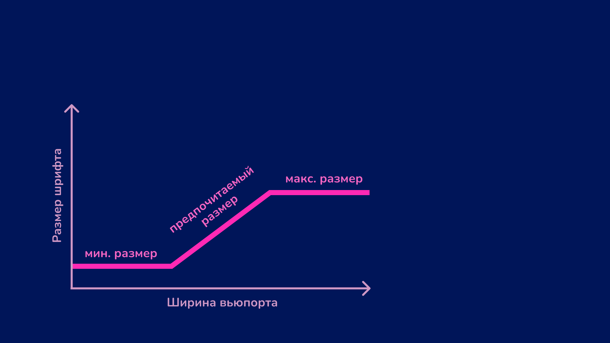
Как сверстать резиновый текст?
JavaScript 🦖
Миксины CSS-препроцессоров.
calc() и единицы vw (Viewport width) и vh (Viewport height).
clamp().
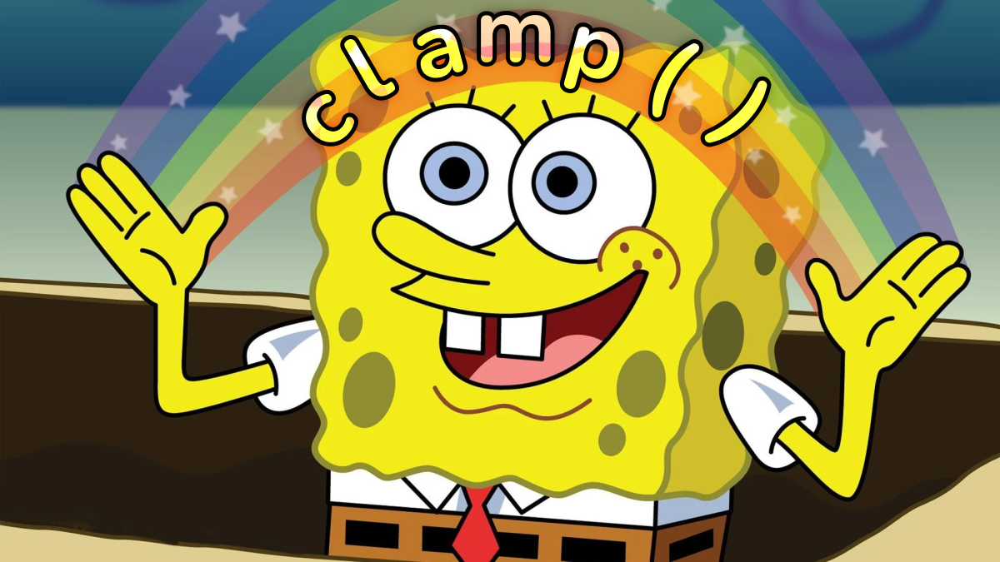
Что такое clamp()?
CSS-функция, которая позволяет задать значение свойству в указанном диапазоне.
Устройство clamp()
Значения:
минимальное (minValue);
предпочитаемое (prefValue);
максимальное (maxValue).
clamp(minValue, prefValue, maxValue);
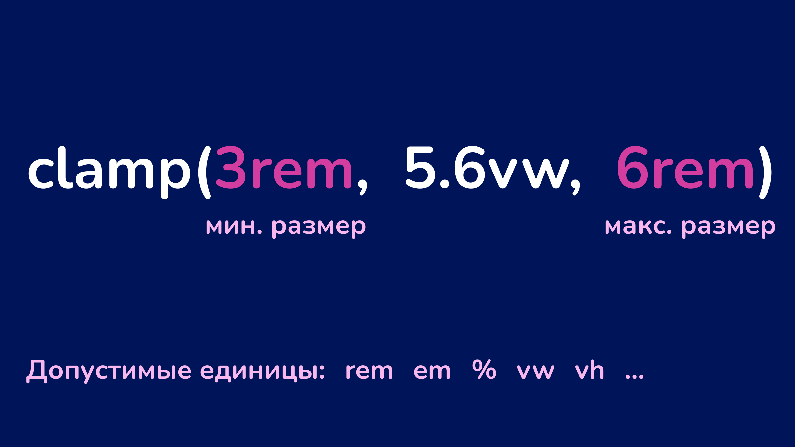
За плавное изменение размера текста отвечает предпочитаемое значение.
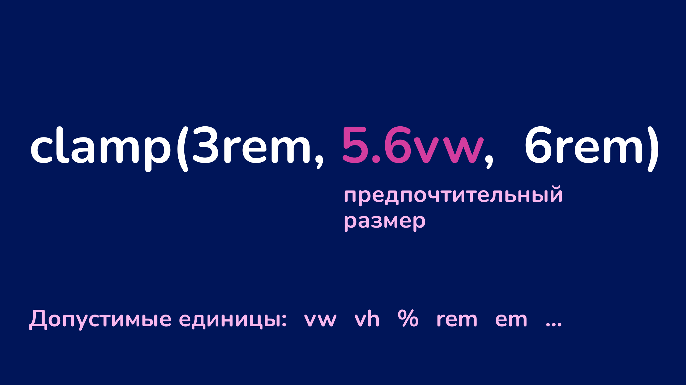
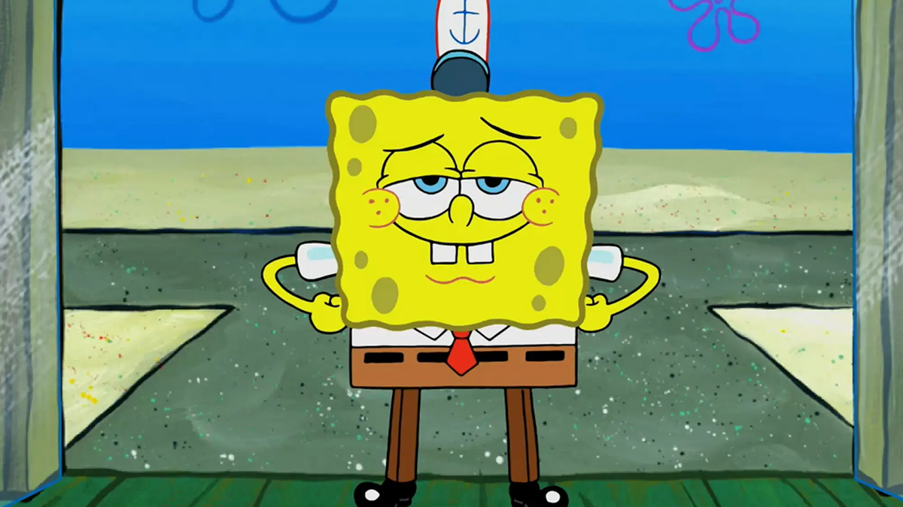
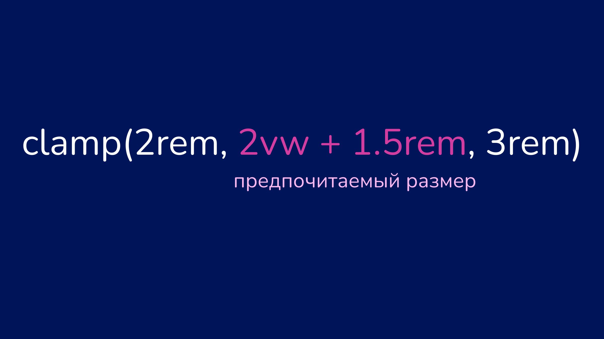
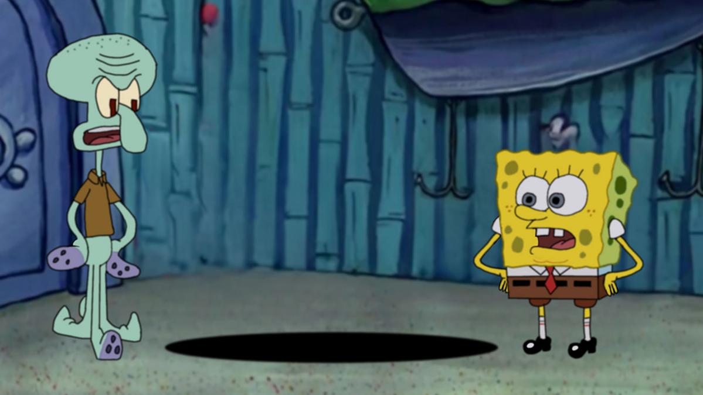
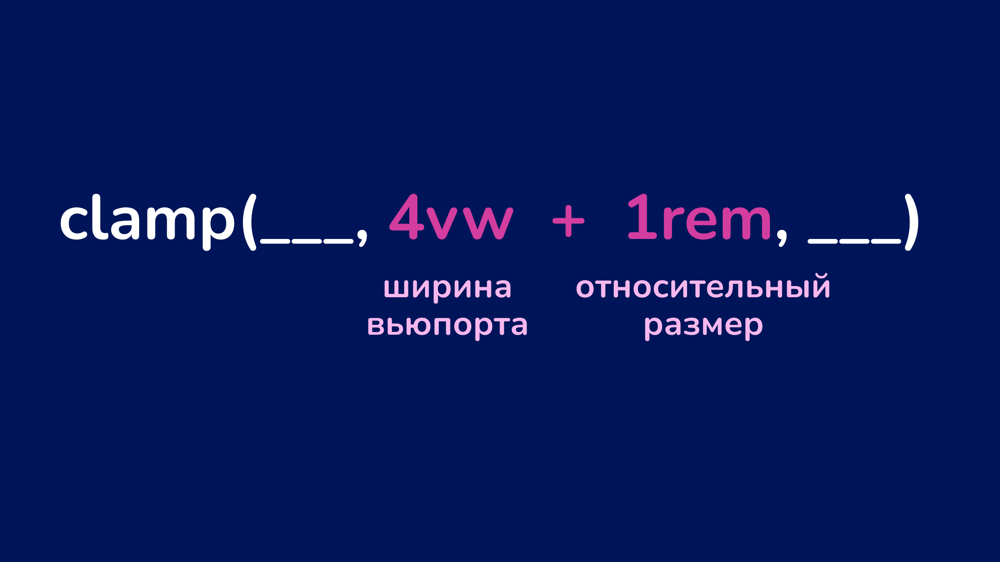
Предпочитаемая ширина (vw)
y1 — минимальный размер текста;
y2 — максимальный размер текста;
x1 — ширина вьюпорта, на которой заканчивается мин. размер текста;
x2 — ширина вьюпорта, на которой начинается макс. размер текста.
Относительный размер (rem)
y1 — мин. размер текста;
y2 — макс. размер текста;
x1 — ширина вьюпорта, на которой заканчивается мин. размер текста;
x2 — ширина вьюпорта, на которой начинается макс. размер текста.
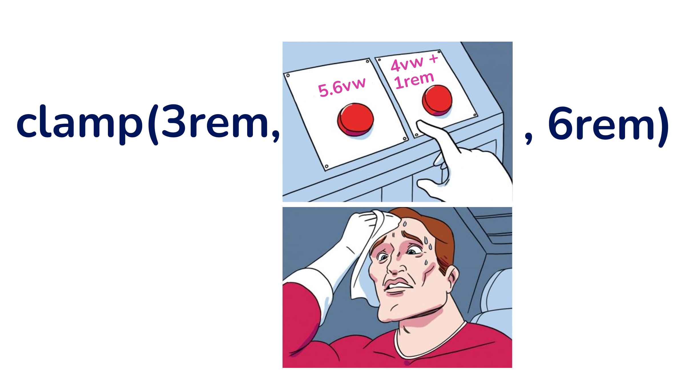
Вариант с формулой
Более плавное масштабирование.
Текст не становится слишком маленьким на мобильных устройствах.
Текст не увеличивается слишком резко при увеличении ширины экрана.
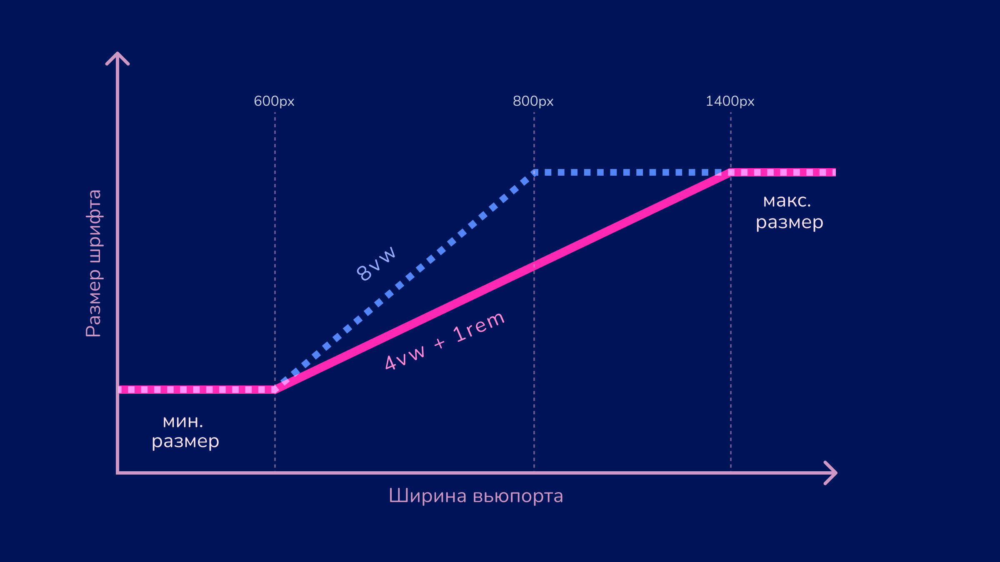
Часть NaN. Работает — не трогай
Секреты успешной резины
Не задавайте минимальные и максимальные размеры шрифта в пикселях.
Следите за соотношением между самым большим и самым маленьким шрифтом.
Почему не пиксели?
Если задать размер шрифта в пикселях, он заменит стандартный размер браузера (16 пикселей), и текст не будет увеличиваться при изменении настроек.
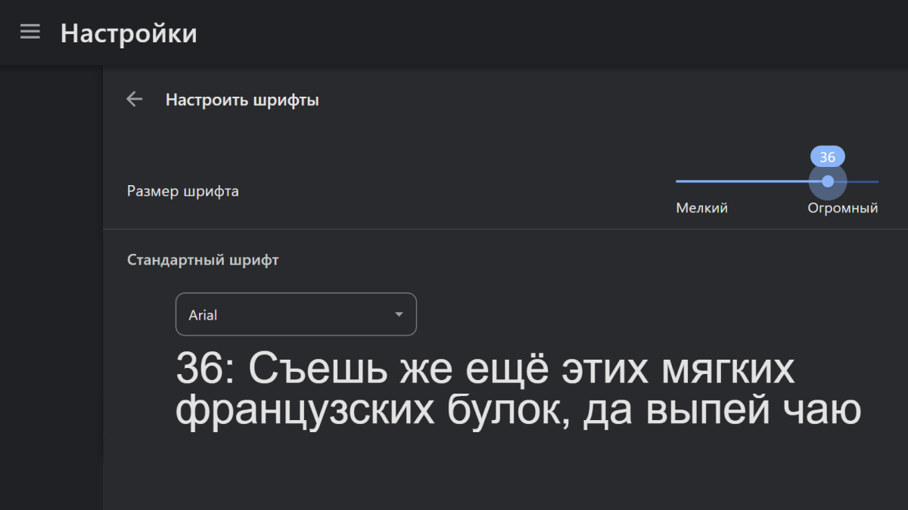
Пример с элементом html
html { font-size: 15px;}h1 { font-size: 1rem;}
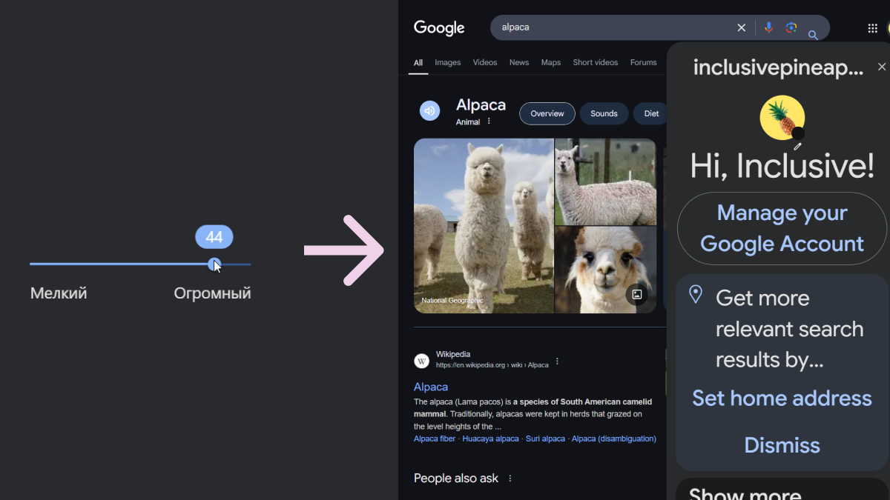
Соотношение между бо́льшим и меньшим значениями
Максимальный размер шрифта не должен превышать минимальный больше чем в 2.5 раза 🤯
Почему такое соотношение?
Текст с неправильными размерами плохо масштабируется, потому что не достигает двукратного увеличения из-за наложения функций увеличения и масштабирования.
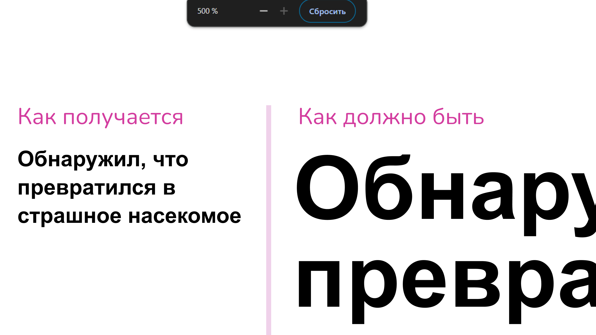
Кто увеличивает текст и масштабирует интерфейс
Люди со слепотой или другими особенностями зрения.
Те, кто по другой причине хотят сделать шрифт и элементы побольше.